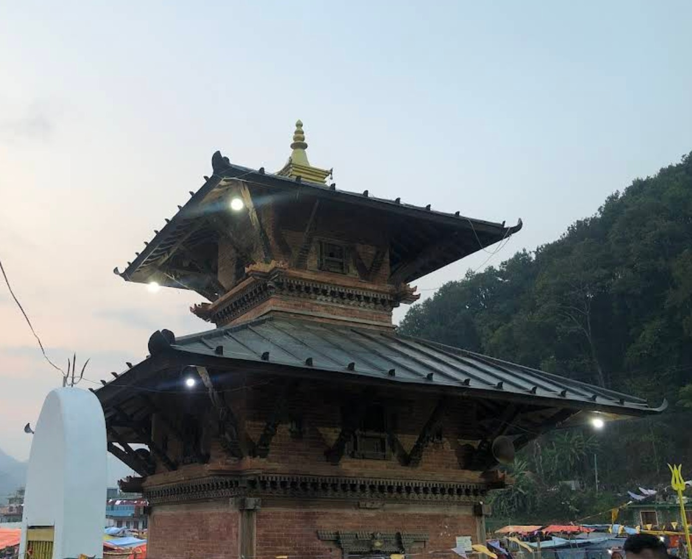
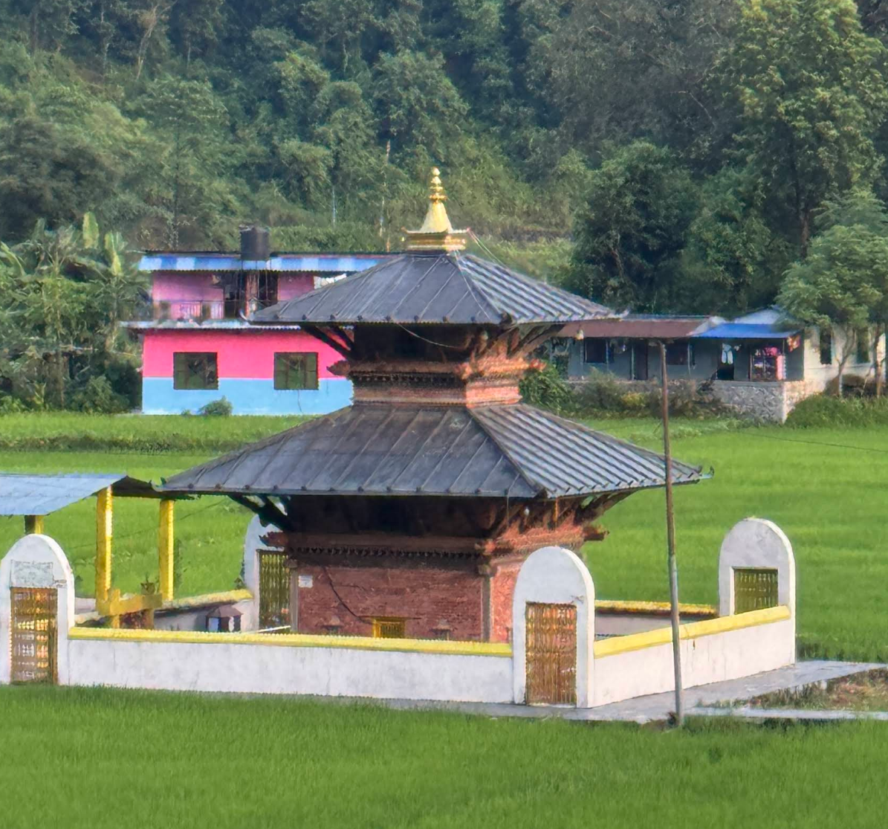
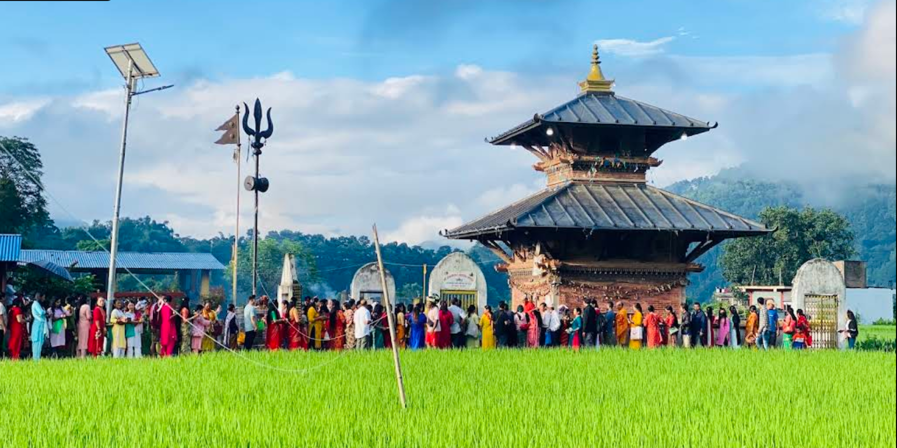
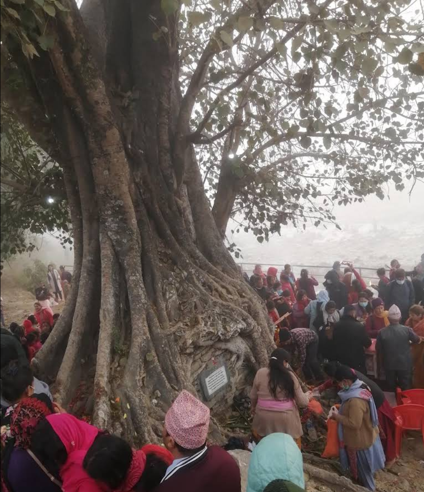
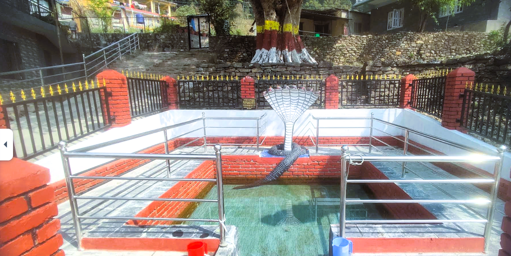
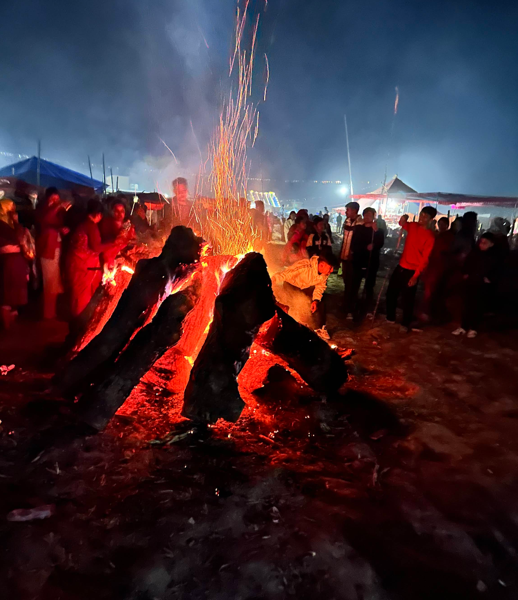
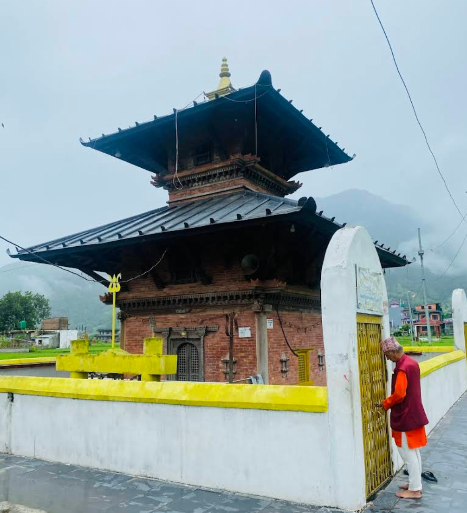
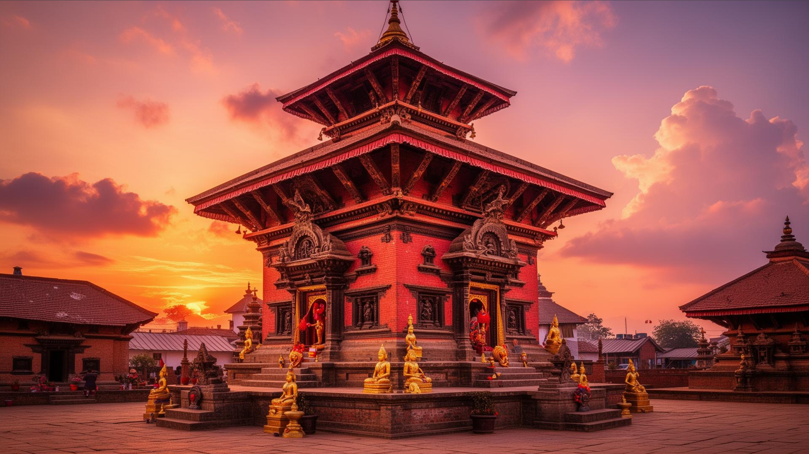

स्थापना काल
लम्जुङका तत्कालीन राजा वीर नारायण शाहद्वारा मन्दिरको स्थापना। जमिन जोत्ने क्रममा साक्षात् शिवलिङ्ग फेला परेपछि यस पवित्र स्थलको निर्माण गरिएको ऐतिहासिक मान्यता।
सन्तान प्राप्तिको केन्द्र
"सन्तानेश्वर महादेव" को रूपमा ख्याति प्राप्त। सयौँ वर्षदेखि सन्तानको इच्छा राख्ने दम्पतीहरूले महाशिवरात्रिको रातभर उभिएर दीप प्रज्वलन गरी पूजा गर्ने अनौठो परम्पराको सुरुवात।
पुनर्निर्माणको आवश्यकता
विनाशकारी महाभूकम्पका कारण मन्दिरको संरचनामा क्षति। सम्पदाको संवेदनशीलतालाई ध्यानमा राख्दै प्राचीन वास्तुकला जोगाउन पुरातत्व विभागसँगको समन्वयमा संरक्षण कार्यको थालनी।
पुनरुत्थान र आधुनिक सुदृढीकरण
भक्तपुरे इँटा र परम्परागत प्यागोडा शैलीको प्रयोग गरी मन्दिरको पूर्ण पुनर्निर्माण। हाल पश्चिमाञ्चलकै "दोस्रो पशुपतिनाथ" का रूपमा वार्षिक लाखौँ भक्तजनहरू भित्र्याउने धार्मिक पर्यटकीय केन्द्र।

ईशानेश्वर महादेवको उत्पत्ति र चमत्कारिक इतिहास
ईशानेश्वर महादेव मन्दिरको उत्पत्तिको कथा निकै रोचक र चमत्कारिक छ। स्थानीय जनश्रुति अनुसार, सयौँ वर्ष पहिले यस स्थानमा खेत जोत्ने क्रममा हलोको फाली एउटा शिलामा ठोकिन पुगेको थियो। उक्त शिलाबाट एक्कासी दूध वा रगत बगेको देखेपछि खोजी गर्दा त्यहाँ साक्षात् शिवलिङ्ग फेला परेको मानिन्छ।
यस घटनासँग जोडिएका केही अलौकिक प्रमाणहरू आज पनि मन्दिरमा देख्न सकिन्छ:
- खण्डित शिला: हलोको फाली लागेर चोइटिएको शिलाको भाग अहिले पनि सुरक्षित छ।
- ऐतिहासिक अवशेष: हलो जोत्ने किसान र गोरुहरू सोही स्थानमा मृ त भएका थिए, जसका सिङ र स्मृति चिन्हहरू आज पनि मन्दिर भित्र संरक्षित छन्।
यसरी ईश्वरीय शक्ति प्रकट भएको हुनाले नै यस क्षेत्रलाई पवित्र तीर्थस्थलको रूपमा पुज्न थालिएको हो।
इशानेश्वर मन्दिरका झलकहरू
यस ग्यालरीमा ६०० वर्ष पुरानो ईशानेश्वर महादेव मन्दिरको ऐतिहासिक वास्तुकला, गणेश थान र पार्वती मन्दिरका दृश्यहरू समेटिएका छन्। यहाँ महाशिवरात्रिको भव्य मेला, रातभरि दियो बालेर जाग्राम बसेका भक्तजनहरू र करापुटारको आध्यात्मिक रौनकलाई तस्बिरहरू मार्फत प्रस्तुत गरिएको छ।







पौराणिक तथा लोक कथाहरू
पुस्तादेखि पुस्तासम्म हस्तान्तरण भइसकेका रहस्यमय कथाहरू र दिव्य कथाहरू पत्ता लगाउनुहोस्
"स्थानीय जनश्रुति अनुसार, धेरै वर्ष पहिले एक किसानले खेत जोत्ने क्रममा हलोको फाली एउटा शिलामा ठोक्किएको थियो। उक्त शिलाबाट रगत र दूध बग्न थालेपछि उत्खनन गर्दा साक्षात् शिवलिङ्ग प्रकट भएको मानिन्छ। त्यही समयदेखि यसलाई पवित्र तीर्थस्थलको रूपमा पुज्न थालियो।"
"यस मन्दिरलाई 'सन्तानेश्वर महादेव' भनिने मुख्य कारण यहाँको अटुट विश्वास हो। शिवरात्रिको रातभर उभिएर दियो बाली प्रार्थना गर्ने दम्पतीहरूलाई भगवान शिवले सन्तान सुख प्रदान गर्ने जनविश्वास रहिआएको छ।"
"यो मन्दिरलाई पश्चिम नेपालको पशुपतिनाथ मानिन्छ। धार्मिक शक्ति र भक्तजनहरूको आस्थाका कारण यस क्षेत्रलाई काठमाडौंको पशुपतिनाथ जत्तिकै पवित्र र शक्तिशाली मानिने पौराणिक मान्यता छ।"
"स्थानीय स्तरमा अर्को एउटा ठूलो विश्वास छ— यदि यस क्षेत्रमा लामो समयसम्म खडेरी पर्यो भने, मन्दिरमा विशेष क्षमा पूजा र रुद्राभिषेक गर्नाले तत्कालै आकाशबाट पानी पर्छ। खेतीपातीमा निर्भर यहाँका बासिन्दाहरूले आज पनि प्राकृतिक संकट आउँदा ईशानेश्वर महादेवलाई नै आफ्नो मुख्य रक्षक र संकटमोचक मान्ने गर्छन्।"